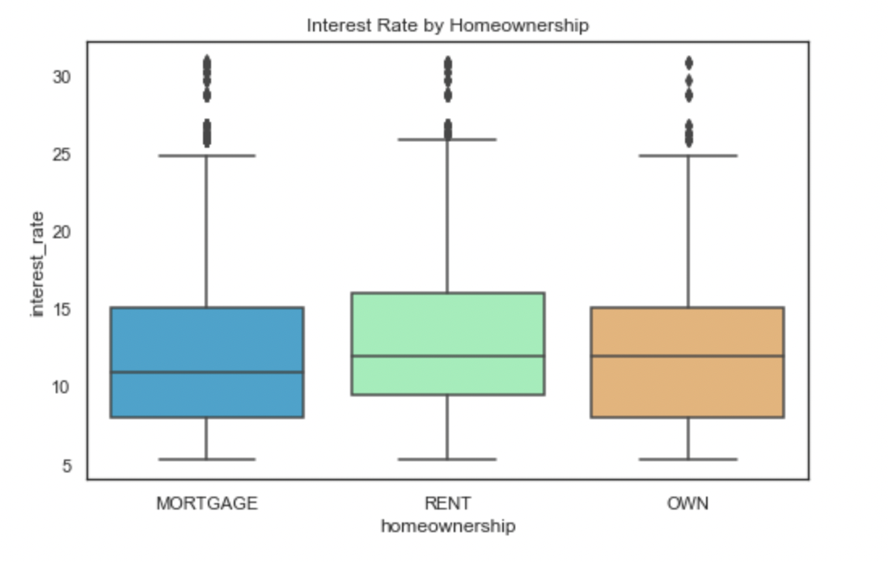

Data Visualization:
Let us anlayse if there are any patterns and gather insights in our dataset:
- We calculate the mean interest and loan amount with accordance to the state of the applicant to see if we can find any patterns
- We can see that Alaska and Hawaii are the states with most frequent loan amount with Delaware being one of the lowest
- The Mean Interest Rate is highest in North Dakota and lowest in Maine
Next, we plot the Frequency Distribution of Loan Amount and Interest Rate

- We see that most interest rates occur around 5, 10 and 12 values with 10 being the highest
- We see that most loan amount given occur around 8000-12000 dollars
- In these plots, we observe loan status and purpose
- Most of the loan status is under current.
- Debt consolidation and credit card are the most frequent causes of getting a loan
We use boxplots to further identify patterns
We see that the interest rate value is almost similar for different types of home ownership with rent owners's interes rate being slightly higher
It is clearly seen that verified home owners have higher interest rates
Applicants with higher records of bankrupties have higher interest rate and have trouble securing higher loan amount
Seeking loans for vacation yields higher interest rate with house being the lowest